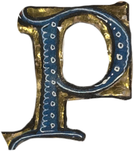

rocessing the silk
A third batch of cocoons was messily processed today. The process involves more fiddling with scalding wet silk than I'd like, but after being stretched over a little wooden frame, soaked in a special wool soap and then rinsed a final time, the result is glossy silk that's (hopefully) ready for spinning into a proper yarn!
I'm still working on a spinning strategy, as my attempts with the drop spindle have been less that ideal.